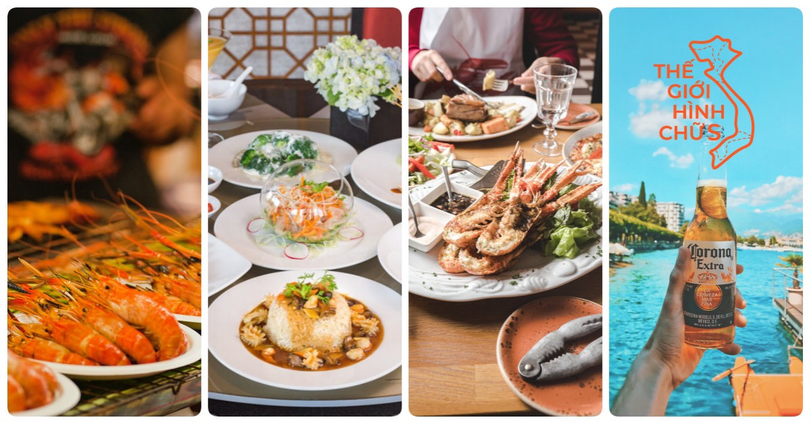

Những món đặc sản Phú Quốc nổi tiếng thơm ngon khó cưỡng
"Đảo ngọc" Phú Quốc làm say đắm lòng người phương xa đâu chỉ bởi bãi cát vàng hay biển trong xanh. Ẩm thực Phú Quốc mới chính là “điểm son chói lọi” khiến du khách gần xa phải vấn vương, không ngớt lời khen ngợi
1. Gỏi Cá Trích phú quốc

Gỏi cá trích Phú Quốc là món ăn đặc sản nổi tiếng với hương vị lạ miệng.
Sự kết hợp hài hòa giữa thịt cá tươi sống được lấy từ phần lườn hai bên để bóp gỏi
, và các nguyên liệu dừa nạo, hành tây, hành tím thái mỏng, ớt thái mỏng tạo nên độ ngọt béo cay cay vừa phải.
Địa chỉ:Nhà hàng Vườn Táo- số 1 đường Trần Hưng Đạo, Dương Tơ, Phú Quốc
2. Bún Kèn

Ngoài những đặc sản quen thuộc như chả cua, nước mắm v.v... còn một món đặc sản Phú Quốc bạn không thể bỏ qua chính là bún kèn. Dù ít được nhắc đến trong danh sách những món ẩm thực Việt Nam, nhưng bún kèn là món ăn khá phổ biến trong bữa cơm của các gia đình Phú Quốc. Bún kèn được nấu từ cá nhàu hay cá ngân dầm nhuyễn rồi chiên giòn. Sau đó cho nước cốt dừa, nước cá luộc, đu đủ, rau thơm, ớt đỏ trộn cùng nhau tạo nên tô bún kèn Phú Quốc “ăn một lần là nhớ mãi"
Địa chỉ: Út Lượm, 87, 30 tháng 4, thị trấn Dương Đông.
3.Gà Rẫy Phú Quốc

khám phá ẩm thực phải nhắc đến món gà rẫy Phú Quốc ngon nức tiếng. Thịt gà mềm ngọt, thơm ăn luộc hay chế biến thành nhiều món khác như: gà tiềm ớt xanh, nộm gà xé, chân gà rút xương
Địa chỉ: Nhà hàng Xin Chào: 66 Trần Hưng Đạo, Dương Đông
4. Nấm Tràm

Nấm tràm là đặc sản Phú Quốc ngon, hương vị đa dạng và có nhiều lợi ích cho sức khoẻ. Nấm thường mọc ở sườn đồi, trên tán lá mục ở rừng tràm. Sau khi hái, nấm về thường được dùng nấu súp, ăn tươi, hoặc phơi khô. Đây cũng là món ăn Phú Quốc thường được du khách mua về làm quà tặng. Nấm có tác dụng chữa bệnh cảm cúm, nhức đầu, bồi bổ thể chất rất hiệu quả. Nếu bạn đến Phú Quốc vào tháng 4 hoặc tháng 7 thì có thể mua được nấm tràm tươi.
Địa chỉ:Chợ Đông Dương
5. Bánh Bò Thốt Nốt

Một trong những hoạt đông khi du lịch Phú Quốc chính là đi chợ đêm. Bạn có cơ hội thưởng thức gần như tất cả các món ăn vặt thơm ngon như bánh bò thốt nốt, bánh mì nướng tỏi, bắp nướng mỡ hành v.v... Buổi tối lành lạnh, cầm trong tay gói bánh thốt nốt ngọt thanh, nâu nâu tròn tròn thì còn gì bằng
Địa chỉ: Chợ Đêm Phú Quốc (54 Đường Nguyễn Trãi,Khu 1,Phú Quốc)
6. Bánh Khéo

Ắt hẳn bạn từng nghe đến bánh khéo, một trong những món ăn vặt nổi tiếng của Phú Quốc. Sở dĩ được gọi là bánh khéo vì để làm ra được những chiếc bánh be bé xinh xinh với đủ màu sắc hấp dẫn, người nặn bánh phải khéo léo và tỉ mỉ đến từng chi tiết. Hình dáng đáng yêu, bên trong bánh được nhân dừa, đậu xanh, khoai môn... Bánh có hương vị ngọt thanh, ít béo, có thể ăn bánh chung với uống trà rất ngon. Đây là món ngon Phú Quốc thích hợp làm quà tặng.
Địa chỉ: Quán Cô Dung, 43, 30 tháng 4, Dương Đông
7. Tiết Canh Cua

Món ăn Phú Quốc có cái tên lạ tai này là đặc sản của người dân nơi đây. Cua được dùng làm tiết canh nhất định phải là cua biển, nhiều gạch mới đảm bảo được độ ngon ngọt và bổ dưỡng của nó. Món ăn được chế biến cầu kỳ. Tiết cua màu trắng được lấy từ chân cua, ăn cùng thịt cua và ghẹ, ướp gia vị tạo nên hỗn hợp mằn mặn, ngọt bùi từ thịt cua và gạch.
Địa chỉ: Quán Ra Khơi, 131, 30 tháng 4, Dương Đông
8. Hải Sâm

Hải sâm thường được người dân Phú Quốc gọi là “Đồn đột” hoặc “Đột ngậu”. Đây là món đặc sản Phú Quốc được nhiều người ưa thích vì chứa nhiều dinh dưỡng. Món đặc sản Phú Quốc này là món ăn cao cấp được rất nhiều du khách "săn tìm" khi đến đây.Bạn cũng có thể mua hải sâm khô để làm quà cho người thân; và dĩ nhiên, giá thành của hải sâm thì không hề rẻ nhé.
Địa chỉ: Nhà hàng Cơm Bắc 123: 60 đường 30 tháng 4, thị trấn Dương Đông
9. Ghẹ Hàm Ninh Phú Quốc

Cách trung tâm Dương Đông khoảng 20km, làng chài Hàm Ninh là nơi bạn có thể tìm thấy đủ loại hải sản tươi ngon lành với mức giá khá mềm. Đặc sắc nhất có thể kể đến là món ghẹ Hàm Ninh trứ danh. Ghẹ không quá to nhưng rất dày và ngọt thịt. Ghẹ Hàm Ninh được chế biến đơn giản như luộc hoặc hấp chấm muối tiêu chanh thôi nhưng cũng khiến du khách xuýt xoa vì độ ngon khó cưỡng
Địa chỉ: Làng Chài Hàm Ninh
10. Ốc Gai Xương Rồng

Ốc gai xương rồng hay ốc gai là loại hải sản Phú Quốc không thể không kể đến. Tên của loài ốc này bắt nguồn từ những chiếc gai nhọn đâm tua tủa trên thân. Ốc gai xương rồng nhiều thịt, màu trắng đục, vừa dai vừa giòn, lại rất ngọt và béo. Cách chế biến ốc gai xương rồng ngon nhất và thơm nhất chính là nướng
Địa chỉ: Nhà hàng Sóng Biển, 161 Đường 30 Tháng 4, Khu 1
11. Nhum Biển

Nhum biển là món ăn được cánh mày râu đặc biệt yêu thích trong hành trình khám phá món ngon Phú Quốc. Nhum hay còn gọi là cầu gai thường được nạo thịt nấu cháo, hoặc bổ đôi để nướng và ăn sống tái chanh. Cách phổ biến nhất có lẽ là nhum nướng ăn cùng muối tiêu chanh siêu ngon và bổ dưỡng.
Địa chỉ:Quán Ốc 343 ở số 343 đường 30 tháng 4, khu 1
12. Cá Mú Nướng Mọi

Được thiên nhiên ưu ái ban cho nguồn thủy hải sản phong phú, Phú Quốc sở hữu nhiều loại sơn hào hải vị. Trong số đó, phải kể đến cá mú nướng mọi Phú Quốc - món ngon lạ miệng, hấp dẫn nhất huyện đảo này. Cá mú khi còn tươi nguyên mới đánh bắt được làm sạch và nướng trui trong than hồng. Khi thịt chín tới thì mùi hương thơm ngất ngây khó mà kiềm lòng. Vừa thường thức cá mú nướng mọi, vừa nhâm nhi rượu sim rừng cay cay thì còn gì thi vị bằng
Địa chỉ: Nhà hàng Sông Xanh: 217 đường 30 tháng 4
13. Bánh Canh Cá Thu

Tại Phú Quốc có nhiều quán bán bánh canh. Bánh canh chả cá, bánh canh thịt heo… nhưng quán Phụng gần Dinh Cậu là nổi tiếng nhất. Bánh canh tại đây chỉ sử dụng cá thu tươi ngon do ngư dân đảo đánh bắt được. Cá thu ngoài được nấu tươi, còn được làm chả cá chiên, tất cả sẽ có trong một tô bánh canh thơm phức, say lòng người.
Địa chỉ: Quán ăn Lê Giang: 289 Trần Hưng Đạo, Dương Đông
14. Còi Biên Mai Nướng Muối Ớt

Còi biên mai nướng muối ớt là một trong những món đặc sản Phú Quốc nổi tiếng nhất. Biên mai là một loại sò biển hình tam giác, to cỡ mu bàn tay người lớn và nằm sâu dưới đáy biển. Còi của nó được người dân đảo chế biến thành nhiều món như xào chua ngọt, hấp, nấu súp hoặc lẩu. Nếu bạn ghiền hương vị đậm đà của biển cả thì món còi biên mai nướng muối ớt kèm bia tươi là tuyệt hảo.
Địa Chỉ: Nhà hàng Sông Xanh, 217 đường 30 tháng 4
15. Rượu Sim Rừng

Khi "săn tìm" món ngon Phú Quốc, bạn đừng bỏ qua cơ hội thưởng thức món rượu sim hảo hạng. Rượu sim Phú Quốc được làm từ quả sim chín, hái từ sim rừng Hàm Ninh. Đây là loại rượu rất đặc biệt chỉ có tại Phú Quốc, thường được du khách mua làm quà biếu tặng.
Địa chỉ: Rượu vang sim Bảy Gáo: 124 Đường 30 tháng 4